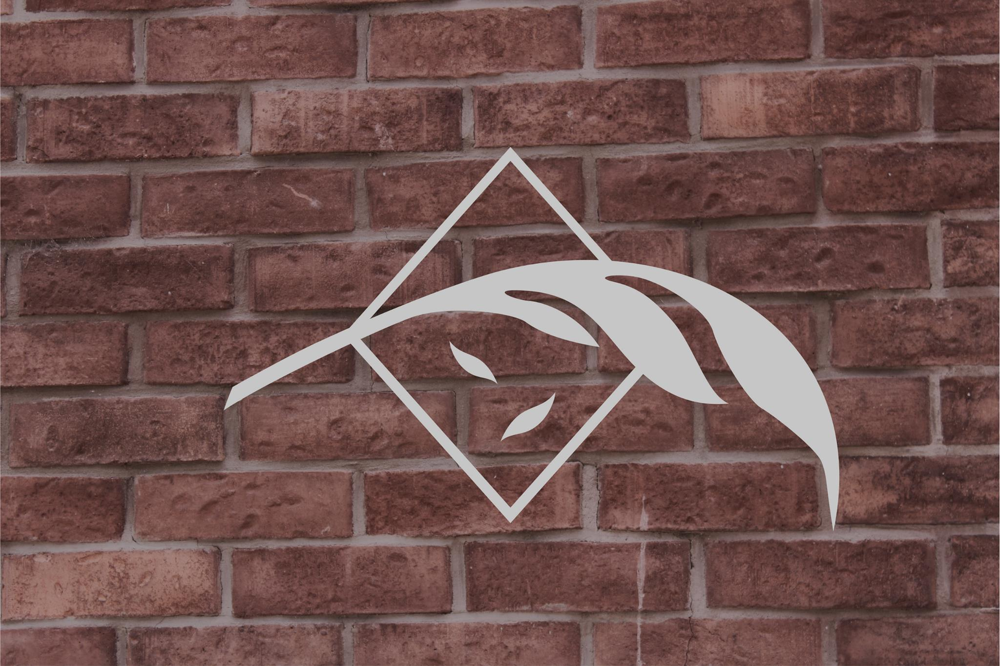

Música
Eventos
Merca'
Biografia
Contacto

El comienzo: Biografía
Life Phases (Rock alternativo/Indie) comienza a finales de 2016 cuando dos cerillitos de una tienda departamental (Óscar Valdillo y Gerardo López) deciden comenzar a ahorrar su sueldo para poder mejorar sus equipos e instrumentos musicales.
Al mismo tiempo que hacían su ahorro, comenzaron a comentarles a amigos sobre su sueño desde niños, hacer una banda. Comenzaron como cotorreo en casa de Gerardo chingando a vecinos todos los días, poco a poco fueron uniendo integrantes, su amigo de la infancia (Chiris Zavala) el hermano mayor de Óscar que había titulado del taller de música clásica (Christian Gómez) y un amigo de la preparatoria (Alan Perezchica) hasta que decidieron que debían tomar seriedad y fue cuando gastaron todos sus ahorros para cambiar sus amplificadores de 15watts por los de 50, los platillos de hojalata por platillos Zildjian.
Comenzaron sacando covers de rock alternativo indie, hasta que entonces deciden componer y grabar sus primeros dos demos en un estudio casero “Funny Girl” y “Move On”.
La banda decidió que ya era momento de grabar otra canción meses después esta vez invertirtiendo más del triple de dinero para poder grabar su canción actualmente publicada en Youtube
She’s Going Away
canción que recibió excelentes críticas inmediatas por parte de los seguidores y músicos conocidos de la banda. La banda al ver que las reproducciones no se detenían y al notar bastante diferencia en la calidad, decidieron quedarse en ese estudio para toda la grabación de su primer EP.